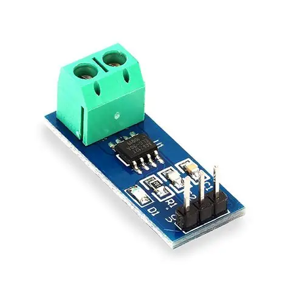

Identificação
| Nome do sensor | ACS712 |
|---|---|
| Categoria | Corrente Elétrica |
| Tipo de sinal | Analógico (tensão contínua centrada em VCC/2) |
Conceito
O ACS712 é um sensor de corrente linear fabricado pela Allegro MicroSystems que mede tanto corrente contínua quanto alternada utilizando o efeito Hall. Sua característica mais importante é a isolação galvânica: o caminho por onde circula a corrente medida é fisicamente separado da eletrônica de saída, suportando cerca de 2,1 kV eficazes. Isso permite que um microcontrolador de 5 V monitore com segurança cargas ligadas à rede elétrica. Comparado ao uso de resistores shunt, ele tem a vantagem de introduzir uma perda mínima no circuito, pois a resistência interna do condutor é de apenas 1,2 mΩ.

Princípio de funcionamento
A corrente a ser medida percorre um condutor de cobre interno ao encapsulamento. Toda corrente elétrica gera ao seu redor um campo magnético proporcional à sua intensidade, conforme a lei de Ampère. Um elemento Hall integrado ao silício, posicionado logo abaixo desse condutor, converte o campo magnético em uma tensão proporcional. Essa tensão é amplificada, filtrada e disponibilizada na saída analógica. Como o sensor precisa representar correntes nos dois sentidos, sua saída é centrada em metade da tensão de alimentação (2,5 V em 5 V) na ausência de corrente: valores acima indicam corrente em um sentido e abaixo, no sentido oposto. A saída é ratiométrica, ou seja, acompanha proporcionalmente variações da tensão de alimentação.
Principais especificações técnicas
| Versões disponíveis | ±5 A, ±20 A e ±30 A |
|---|---|
| Sensibilidade | 185 mV/A (5 A), 100 mV/A (20 A) e 66 mV/A (30 A) |
| Tensão de alimentação | 5 V CC |
| Tensão de saída em repouso | VCC/2, ou seja, cerca de 2,5 V |
| Isolação galvânica | 2,1 kV eficazes (RMS) |
| Resistência interna do condutor | 1,2 mΩ |
| Largura de banda | Até 80 kHz |
| Erro total de saída | Cerca de 1,5% a 25 °C |
| Tempo de resposta | Aproximadamente 5 µs |
Tipo de sinal
Analógico (tensão contínua centrada em VCC/2)
A saída é analógica e deve ser lida por uma entrada ADC. Para corrente contínua, basta subtrair o valor de repouso (offset) da leitura e dividir pela sensibilidade da versão utilizada. Já para corrente alternada, uma única amostra não tem significado: é preciso amostrar o sinal ao longo de vários ciclos completos da rede e calcular o valor eficaz (RMS) pela raiz da média dos quadrados. Recomenda-se sempre medir e armazenar o offset real com a carga desligada, pois ele varia de peça para peça. Em placas de 3,3 V, é necessário um divisor de tensão na saída, já que o sensor é alimentado em 5 V.
Aplicações industriais e IoT
- Monitoramento de consumo de energia de motores e máquinas;
- Detecção de sobrecarga, travamento de rotor e falta de fase;
- Manutenção preditiva pela análise da assinatura de corrente do motor;
- Proteção de acionamentos e de fontes de alimentação;
- Medição de carga e descarga de baterias e sistemas fotovoltaicos;
- Submedição de consumo por máquina em programas de eficiência energética.
Exemplo de utilização em um projeto
Para acompanhar a saúde do motor do eixo principal de um robô cartesiano, um ACS712 de 20 A é instalado em série com a alimentação do acionamento. O microcontrolador calcula a corrente eficaz a cada ciclo de trabalho e a compara com o perfil histórico daquela mesma operação. Um aumento progressivo da corrente para o mesmo movimento sugere aumento de atrito por falta de lubrificação ou desalinhamento mecânico. Os valores são publicados em um painel de manutenção preditiva que emite um aviso quando a corrente média do dia supera em 15% a linha de base registrada logo após a última manutenção.
const int PINO_ACS = A0;
const float SENSIBILIDADE = 0.100; // 100 mV/A (versao de 20 A)
float offset = 2.5; // medido com a carga desligada
float lerCorrenteRMS() {
float soma = 0;
const int AMOSTRAS = 1000;
for (int i = 0; i < AMOSTRAS; i++) {
float tensao = analogRead(PINO_ACS) * 5.0 / 1023.0;
float corrente = (tensao - offset) / SENSIBILIDADE;
soma += corrente * corrente; // acumula o quadrado
delayMicroseconds(100);
}
return sqrt(soma / AMOSTRAS); // valor eficaz
}
void setup() {
Serial.begin(9600);
// calibra o offset com a carga desligada
long bruto = 0;
for (int i = 0; i < 500; i++) bruto += analogRead(PINO_ACS);
offset = (bruto / 500.0) * 5.0 / 1023.0;
}
void loop() {
Serial.print("Corrente: ");
Serial.print(lerCorrenteRMS());
Serial.println(" A");
delay(2000);
}